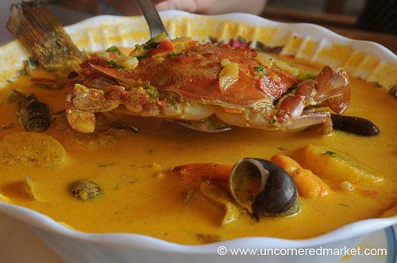

Tapado

Tapado is a seafood soup served in Central American countries such as Guatemala and Honduras. It uses coconut milk and seafood as well as plantains. Within these countries, tapado is associated with the Garifuna community.
Ingredients
- lobster
- plantains
- minced garlic
- 2 roma tomatoes
- 1 large sweet potato
- 1 green banana
- 1 can coconut milk
- hot pepper sauce
- fresh ginger
Steps
- Place the garlic, ginger, jalapeno, bell pepper, cilantro, tomatoes and onion in a food processer and process until very fine. Depending on the size of your food processor this may take a few different rounds.
- Heat the oil on medium heat in a large Dutch oven and add the processed mixture. Stir a bit until flavors combine but ingredients are not burnt, about 3 minutes.
- Add the seafood stock and coconut milk. Stir to combine and then bring to a simmer.
- Add the sweet potato, green banana, plantains, oregano, and ground annatto. Stir to combine and let simmer for 8 minutes.
- Add the two lobster tails to the pot and cook for another 8 minutes.
- Finally, add the cod fish and shrimp to the pot and cook for another 5 minutes.
- To serve, remove the two lobster tails and put each in their own deep soup bowl. Ladle in the soup around the lobster tails and garnish with extra cilantro and a few dashes of hot pepper sauce.